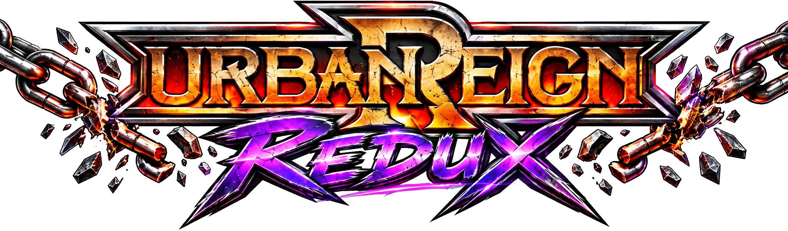
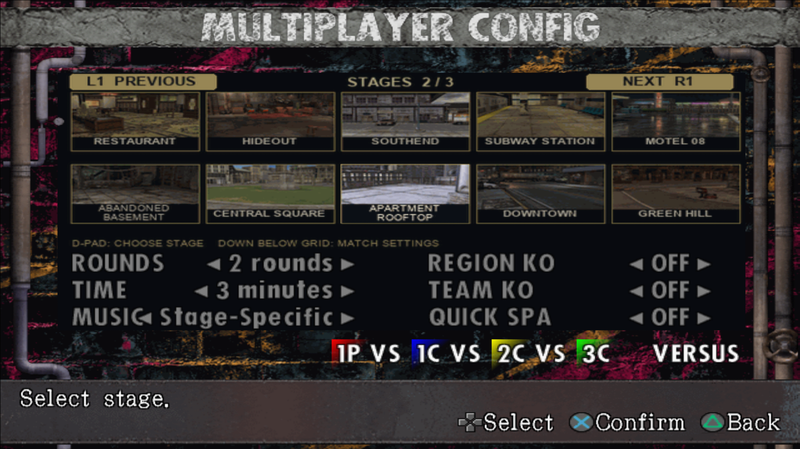
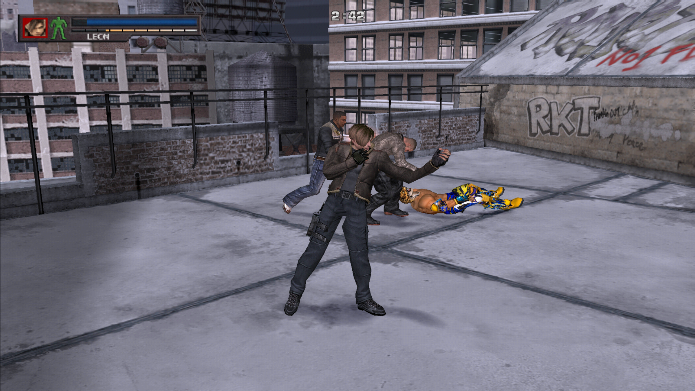
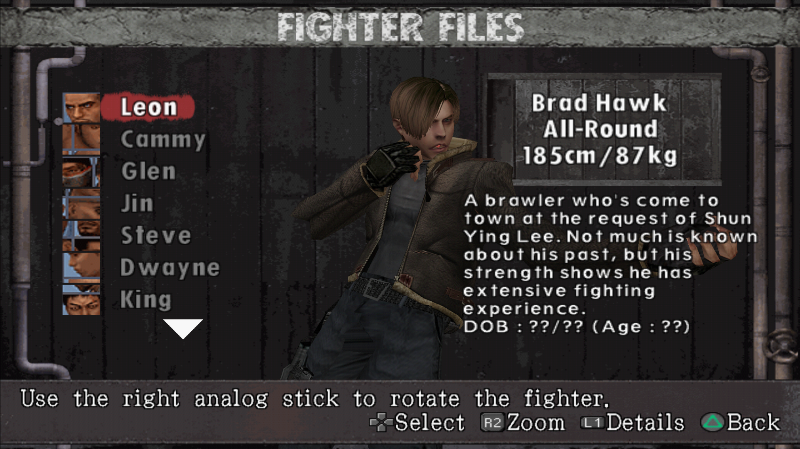
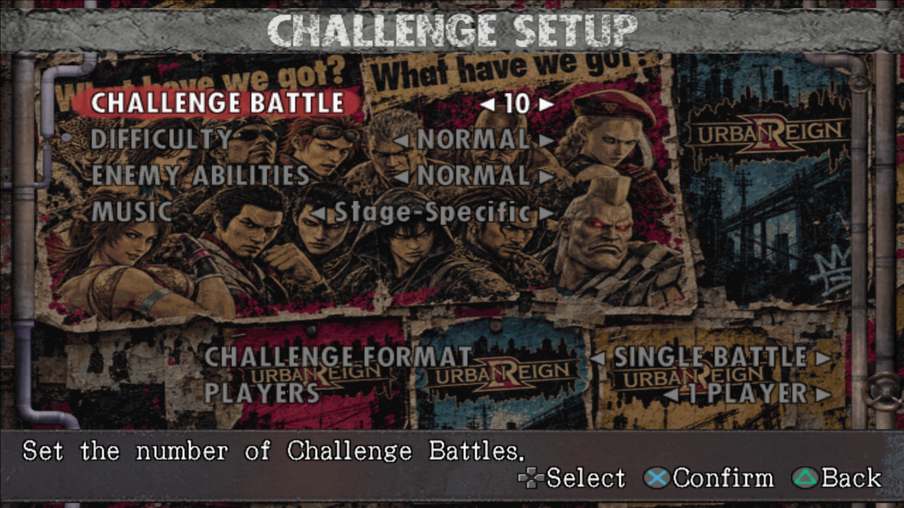
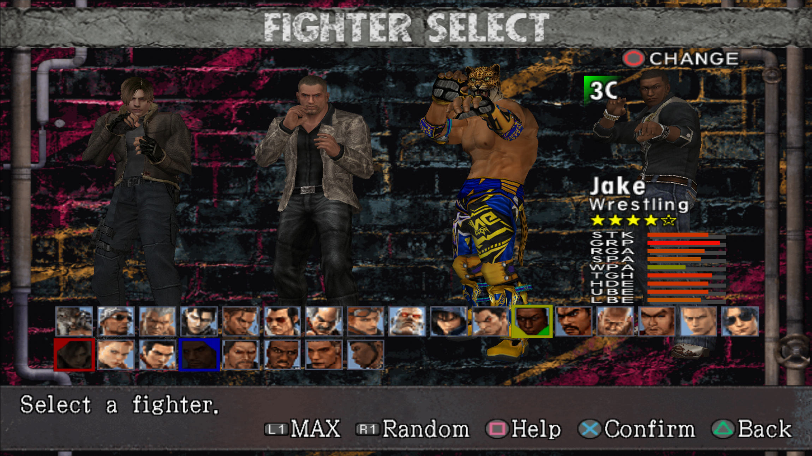

Patch and play
Download the 0.4 package, install its textures and memory setting, then fresh-boot the included ISO in PCSX2.
URBAN REIGN · COMMUNITY MOD PROJECT

What does someone do if they want mods for one of their favorite games? You make them!
Urban Reign Redux 0.4 is available as a complete manual download: the new ISO, matching replacement textures and the required PCSX2 memory setting. Extract the ZIP and follow START HERE.txt.
A new cast and a complete Redux presentation for Urban Reign.
THE ULTIMATE MULTIPLAYER BEAT 'EM UP
Want a new flavor of Smash Bros. with a deeper fighting game aesthetic? Urban Reign was one of those classic hidden gems with an addictive and deep gameplay system under its hood, but a rushed development meant it could never see its full potential.
Now, thanks to mod tools, this addictive multiplayer beat 'em up actually has the roster it deserves.
Download the 0.4 package, install its textures and memory setting, then fresh-boot the included ISO in PCSX2.
Music, menus, moves—you name it! The tools are here to tailor your game into whatever you want it to be.
The optional editor provides model previews and tools for preparing models, textures and audio, then exporting ready-to-apply launcher packs. Be sure to share your creations with the community!
Let's tear it up!
A CLOSER LOOK
Characters, tools and in-game
captures from the release.
OPTIONAL — FOR MOD CREATORS
The complete beginner workflow from the editor,
with the same guides and banner artwork.
Swap familiar faces for your own cast. Preview characters, customize their look, and take the finished lineup into a fight.
Bring a model from Blender, fit its rig, then add portraits and voice clips. The following steps walk you through it.
Try one character first. A clean model and a few good movement checks make the rest much easier.
Choose Prepare to begin. Return to Orbit whenever you want to try a step in the viewer.
Choose your target fighter and treat their memory budget as the final limit. Around 3,000–4,000 triangles is a useful starting point.
Use a neutral T-pose, keep useful joint loops, close seams, and remove hidden geometry before export.
Export the OBJ and MTL with diffuse PNGs and UVs. Use RGBA for hair and bake procedural materials first.
In Settings, select the original ISO, mod folder, output folder, and emulator. Keep the original model and disc image intact.
Rig prepares the OBJ and transfers the target fighter's weights. Mixamo is optional, not required.
Center the major joints carefully. A misplaced ankle, knee, or shoulder creates obvious bends.
Check guard, punch, crouch, and head turn poses. Bind hair to the head and keep rigid armor stable.
Reset the pose before export and save the weight sidecar so reviewed weights preserve your edits.
Anchor the attachment point firmly to the body so the accessory does not drift.
Match the helper chain to the target character's native physics bones whenever possible.
Fade influence gradually along the belt or strap so movement travels smoothly toward the loose end.
Viewer checks help, but a short in-game fight reveals clipping and physics problems best.
Create a clear 256 × 256 portrait that reads well in the character select layout.
Add matching voice clips and preview them before building the final mod.
Use 1K textures as a practical baseline, preserving transparency and the source material layout.
Review names, portraits, voices, textures, memory use, and movement before export.
Keep every texture island in the same position so the model continues to read the intended material.
Start at 1K. Use 2K where the added detail is visible and the memory cost makes sense.
Place optional replacement textures in the emulator texture pack for a sharper presentation.
Check seams, transparency, color, and detail at normal gameplay distance.
Select the character and presentation packs you want in the mod loader.
Apply the selected packs to a clone or recoverable overwrite of your supported ISO.
Cold boot the resulting image in your usual setup so every replacement loads cleanly.
Check movement, effects, sound, portraits, and textures, then return to the editor for any final correction.
VERSION 0.4 · OCTOBER 3, 2026
Urban Reign Redux 0.4 + Textures · 1.75 GB manual package
↓ DOWNLOAD 0.4 + TEXTURESPublic Google Drive download · No mod installer required
Includes the 0.4 ISO, 167 replacement textures, PCSX2 ExtraMemory game setting, setup instructions and file checksums.
Supply your own PCSX2 installation and BIOS. Follow START HERE.txt before launching.
The earlier Auto-Installer does not install this 0.4 build.
START HERE
Get the 0.4 + Textures ZIP above. Extract it and read START HERE.txt. Place the new ISO in your games folder.
With PCSX2 closed, merge the supplied ExtraMemory game setting into its data folder and install the textures. Move older Redux texture packs outside the active texture folder to avoid conflicts. Enable Load Textures.
Open the new ISO in PCSX2. Do not resume an older emulator save state. Memory-card saves may still be used.
Your own PCSX2 installation and BIOS, with ExtraMemory support enabled. Tested with PCSX2 2.7.403. The ISO, textures and game setting are included in this manual package.
No. Neither is required for this 0.4 manual package. The earlier installer is a separate legacy release.
VERSION 0.4
New combat, SPA and Fighter File recordings; audio routing fixes; revised movesets, model repairs and selection portraits. Read the full changes since 0.3 and known issues.
The gallery below shows features introduced in earlier releases.





This package uses the USA SLUS-21209 game build and requires PCSX2 with ExtraMemory support. Use the included matching textures and game setting.
For setup help, follow START HERE.txt in the ZIP. Include your emulator version and the issue when reporting problems.